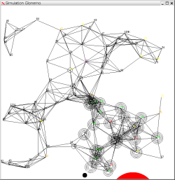
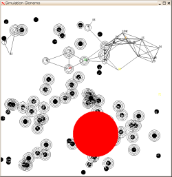

- A precise modeling of the hardware
- The protocol layers (MAC and routing)
- The application code
- An abstract model of the physical environment as viewed by the sensors.
Glonemo is written in ReactiveML.
The environment is modeled using Lucky, an abstract machine for the simulation of non-deterministic reactive code.
Using the graphic window of ocaml, Glonemo can display the simulation progress. See the example section.
Publications
Modélisations et Analyses de Réseaux de Capteurs. Ludovic Samper. Thèse de doctorat de l'INPG. Soutenue publiquement le 7 avril 2008 à Grenoble. [ bib | .pdf | slides.pdf ]On the Importance of Modeling the Environment when Analyzing Sensor Networks. Ludovic Samper, Florence Maraninchi, Laurent Mounier, Erwan Jahier and Pascal Raymond. 3rd International Workshop on Wireless Ad-hoc and Sensor Networks (IWWAN'06), June 2006, New York, USA. [ bib | .pdf ]
GLONEMO: Global and Accurate Formal Models for the Analysis of Ad- Hoc Sensor Networks. Ludovic Samper, Florence Maraninchi, Laurent Mounier and Louis Mandel. InterSense: First International Conference on Integrated Internet Ad hoc and Sensor Networks. May 2006, Nice, France. [ bib | .pdf | slides.pdf ]
Last features
March 2006 - A "fan" has been implemented in order to control the cloud!March 2006 - The sensors that have no more energy disappear.
February 2006 - Now, the routing protocol directed diffusion has been implemented.
Example
Description of the example
The goal of the network is to detect a radioactive cloud. The cloud, modeled in Lucky is a disk.The routing layer is directed diffusion.
The MAC layer is a preamble sampling mac protocol.
We simulate here, one hundred nodes.
Screenshots of Glonemo simulations
The color of the nodes indicates in which mode (sleep, idle, ...) is their radio.A node is represented by a black disk when its battery ran out of energy.
The number of circles corresponds to the number of collisions suffered by the sensor.
The cloud is the red disk.
|  |  |
{kind=link}
{kind=link}
In the second one, which is from on other simulation, the Lucky constraints prevent the cloud to go near the sink.
Contact
Ludovic SamperAcknowledgement
Many thanks to Louis Mandel for the ReactiveML hotline!